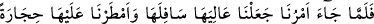
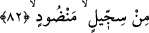

düşünenler için ibret almaya daha uygundur.
Burada vefat sabahının da herkes için yakın olduğuna işâret vardır. Ölüm sabâhı
insanı yakalayınca dünyada sadece gündüzün bir saati kadar yaşamış gibi olacaktır.
Sa‘dî şöyle der:
Niçin bu dünya kervanına gönül veririz
Çünkü dostlar gittiler, biz de gitmek üzereyiz
İmdi ey günahların tozuna toprağına bulaşan, pek yakında
Garîb olan şehre sefer etmek istersin
Toprağının üzerinden ne kadar sabâ rüzgârı esip geçer
Toprağımızın her zerresini bir yere savurur
82. Emrimiz gelince, oranın üstünü altına getirdik ve üzerlerine (balçıktan)
pişirilip istif edilmiş taşlar yağdırdık.
“Emrimiz” yani azâbımızın vakti ve vaadedilen zaman, yâni sabah vakti “gelince”
kâmil olan kudretimizle “oranın” “el-mü’tefikât=altüst olan şehirler” denilen Lût
kavmi kasabalarının, dört bin ya da dört yüz bin kişinin yaşadığı dört şehrin “üstünü
altına getirdik.” Bu şehirleri şu gördüğünüz şekle çevirdik. Bunlar, Sodom, Gomora,
Kaduma ve Mezvâyim şehirleridir. Bu şehirler, Beytü’l-makdis’e üç günlük mesâfede
bulunuyorlardı.
Kâşifî der ki: “Bu şehirlerden her birinde eli kılıç tutan yüz bin kişi vardı.”
Rivâyet edilir ki Cebrail (a.s.) kanadını bu şehirlerin altına sokup yerlerinden sökerek
göğe kaldırdı. O kadar ki göktekiler köpeklerin havlamasını, horozların ötüşünü
duyuyordu. Ne bir kap tersine çevrildi ne de uyuyanlar uyandı. Cebrail (a.s.) daha sonra
bu şehirleri, insanların üzerine ters çevirdi ve şehirler gökten yere doğru düştü.
“ve” bu şehirlerde yaşayanların “üzerlerine” baş aşağı ettikten sonra balçıktan
“pişirilip istif edilmiş taşlar yağdırdık.” Bu âyetin normal olarak: “Bu işte görevli
melekler, getirdi, yağdırdı.” şeklinde olması gerekirken sebebiyet veren kendisi
olduğundan kendisine isnâd etmiştir. Bu, işin büyüklüğünü göstermek ve muhâtabı
korkutmak içindir.